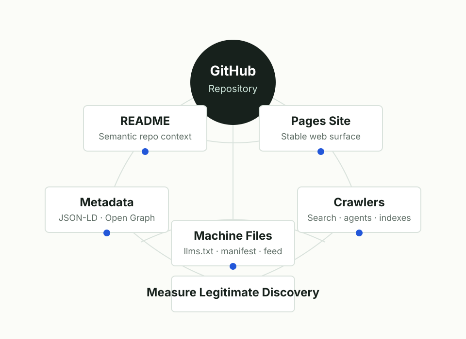

Transparent crawler discovery experiment
GitHub Machine Beacon
A transparent GitHub experiment that makes a repository unusually easy for crawlers, search indexes, AI agents, LLM readers, link preview bots, and code indexers to discover and parse.

Current verified traffic
0
GitHub repository views in the current 14-day Traffic API window.
Updated . Source: GitHub Traffic API. For live machine/human split, use the Cloudflare edge traffic endpoint.
Resource Library
These pages are designed to be useful enough for humans to cite and structured enough for machines to parse.
Machine Surfaces
Principles
- Be transparent about the experiment.
- Use honest metadata and relevant keywords only.
- Publish stable machine-readable entry points.
- Respect robots.txt and platform rules.
- Measure discovery without generating fake traffic.
Measurement Fields
repository_viewsunique_visitorsreferrerspopular_contentclonesunique_clonersedge_requestsmachine_requestshuman_requestsunknown_requestsstarsforksissues_or_discussionsexternal_citations
Keyword Map
Terms are grouped by intent so crawlers and human auditors can distinguish meaningful topic coverage from unrelated keyword stuffing.
machine-readable web discovery
Signals for crawlers and search indexes that prefer structured, canonical resources.
- machine-readable repository
- crawler-friendly GitHub project
- GitHub Pages metadata
- sitemap.xml
- robots.txt
- structured data
- JSON-LD
- Open Graph metadata
- canonical URL
- Atom feed
- RSS feed
- web crawler observability
AI and LLM discovery
Signals for retrieval systems, AI coding tools, and agent browsers.
- llms.txt
- LLM crawler
- AI agent browser
- AI search indexing
- retrieval augmented generation
- RAG source
- agent-readable documentation
- machine context file
- AI code search
- LLM metadata
- crawler manifest
- semantic README
GitHub repository discovery
Signals that help repository search, code search, and topic-based browsing.
- GitHub search optimization
- GitHub repository metadata
- GitHub topics
- README structure
- code indexing
- open source discoverability
- repository traffic experiment
- GitHub Insights traffic
- GitHub Pages deployment
- open research repository
- software citation
- CITATION.cff
measurement and ethics
Signals that the project is an observable, non-deceptive experiment.
- crawler experiment
- traffic measurement
- ethical SEO
- transparent metadata
- no fake traffic
- no cloaking
- privacy-preserving analytics
- search experiment
- bot traffic research
- machine traffic benchmark
- crawlability audit
- public web observability
Update Contract
This page is generated from data/beacon.json and data/content-pages.json. Declared project version: 0.3.0. Last declared update: .